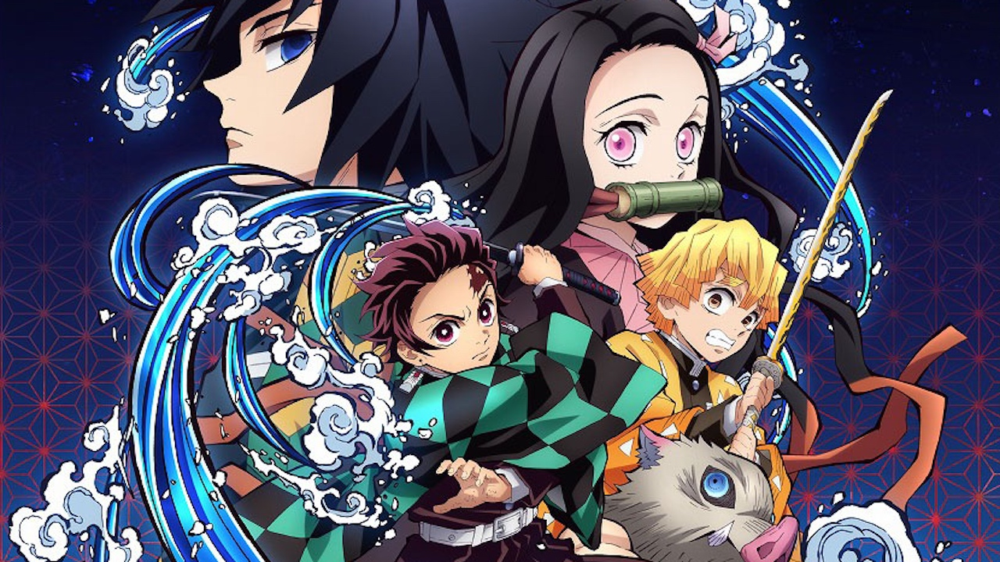
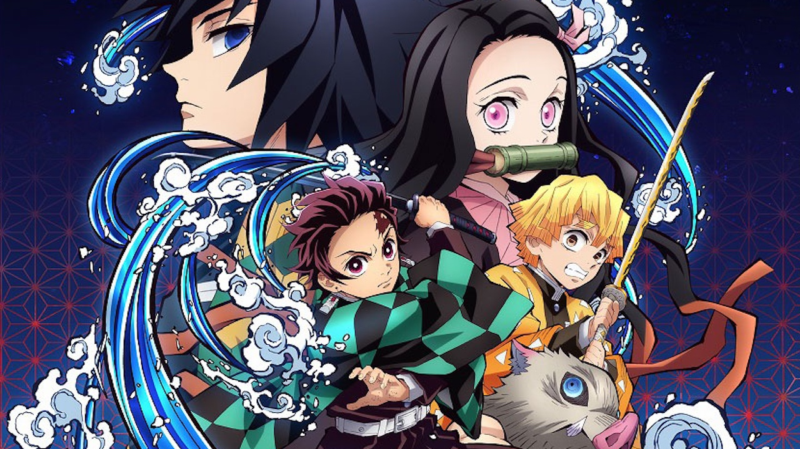
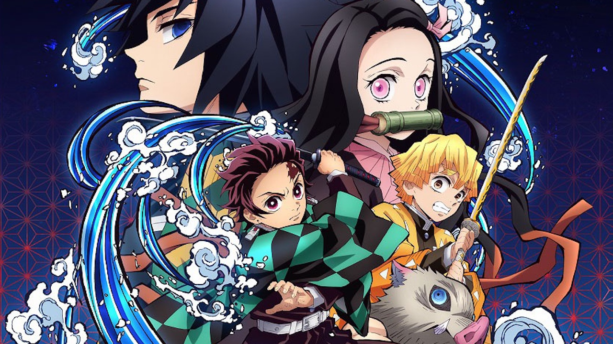
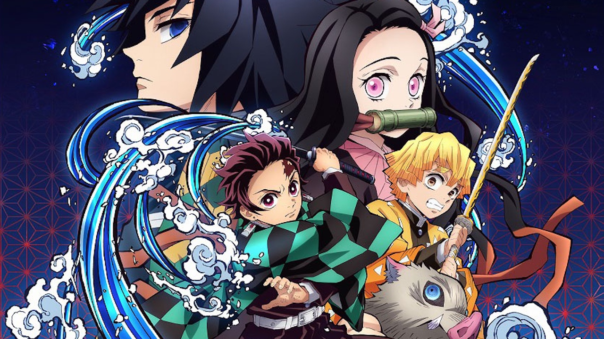

This anime is so wholesome and romantic that it makes you feel lonely. I really like this anime because the art style, plot, characters, and the scenery were perfect. It talks about different problems in the society like bullying and stuff and it helps spread awareness of what might happen. Click here to learn more about Rascal Does Not Dream of Bunny Girl Senpai
One of the greatest plots in all of anime. The character development, the scenery, the plot, the characters, and especially the plot twist, were so well written that it might blow the whole world when it releases it's last season. It also has a sentimental value to me since this is the first anime of many that me and my family watched together.Click here to learn more about Attack on Titan
Demon Slayer has one of the best animations in all of anime. Every episode is at 60 fps and crisp animation throughout the series. It's about a boy training to be a demon slayer because his family was massacred by a demon. The twist is that not all of his family members died, one remained and she was a demon. Click here to learn more about Demon Slayer